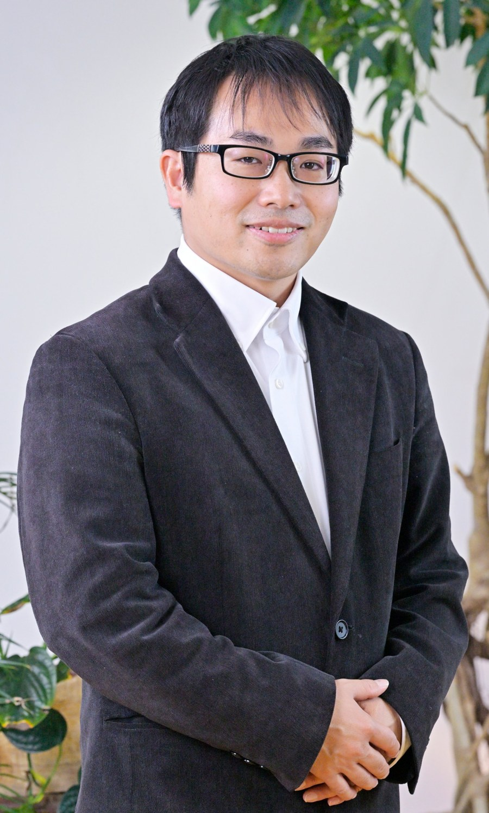
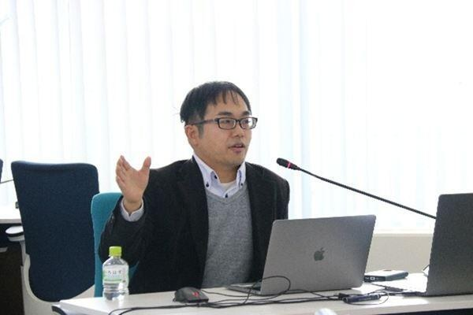
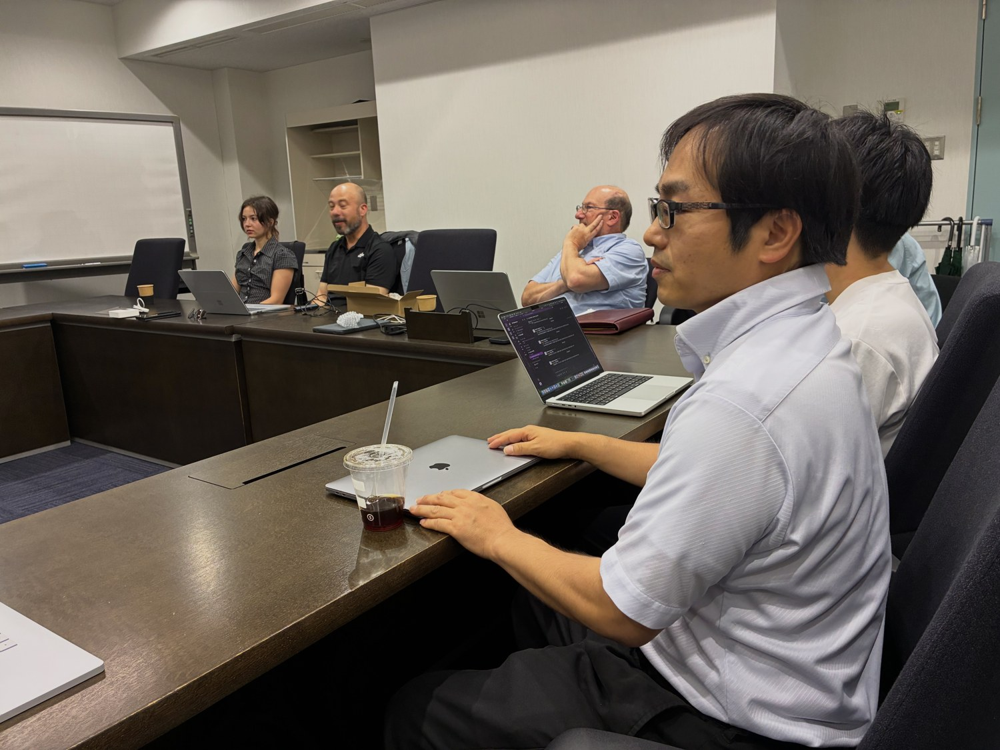

关于实验室
实验室由奥原俊主持，他是三重大学工学研究科讲师，并任名古屋大学高等研究院招聘研究员。他于2020年在名古屋工业大学获得工学博士学位，并曾任加拿大卡尔顿大学客座教授。
主要合作者包括伊藤孝行（京都大学）、Rafik Hadfi 与 Mark Klein（MIT）。实验室与蒙特利尔的麦吉尔大学、Mila，以及加拿大国家研究委员会保持着持续的国际合作。
我们重视健康的工作节奏，尊重每位学生自己的职业道路。也欢迎仍在打基础（AI 或编程）的学生，前提是愿意学习并亲自完成实现。你需要保持好奇，并愿意付出努力。
研究方向
我们的核心是决策支持与共识形成。教育、医疗与高龄者支援、科研支持是主要的应用领域。
自动谈判
当议题繁多且相互关联时，代表各方利益、寻找一致方案的谈判智能体。
多智能体共识
帮助群体达成决策、又不让最大声音主导全局的协议与系统。
基于大语言模型的决策支持
基于大语言模型的对话智能体，能够引出、整理并解释人们真正的偏好。
可解释、以人为本的人工智能
让人工智能的推理保持可理解，使人始终掌握最终决策。
应用涵盖教育、医疗与高龄者支援以及 AI for Science。如果你的兴趣与之相邻，我们很乐意交流。
讲演与受邀报告
奥原俊接受讲演、研讨会与授课邀请，包括企业培训、大学FD、面向地方政府与地区团体的研讨会、学会与研究会，以及外展课程。
AI 智能体将如何改变人类社会
介绍生成式AI、大语言模型与自主AI智能体的趋势，及其对工作、研究与教育的影响。
面向：企业・大学・公众
基于AI的共识形成与决策支持
通过谈判AI、多智能体与议论支持，探讨AI如何协助人类决策。
面向：地方政府・企业・研究会
AI for Science 与科研自动化
面向研究者，梳理AI如何改变研究计划、文献调查、实验支持与论文写作。
面向：大学・研究机构
生成式AI时代的教育与AI素养
面向教育现场，讲解大学教育、数据科学教育以及生成式AI的应用与挑战。
面向：高中・大学・教育机构
主要过往讲演
- 2026.3 Tohoku University Open Science Seminar. "LLM strategies for the AI for Science era: practical know-how for redesigning the research process." Hosted by the Research Management Center, Tohoku University. 宣传单
- 2025.8 "Agreement Generation from Negotiation Dialogues Using Utility Values and LLMs." Invited lecture at "Exploring Frontiers in AI," McGill University and Mila, Montreal. 海报
- 2022.11 "The next step beyond IoT: multi-agent systems and real-world applications." Industry-academia-regional seminar hosted by Sanjusan Bank, Sanjusan Research Institute, Mie University, and the Yokkaichi Chamber of Commerce. 宣传单
- 2022.4 Mie University DS Public Seminar (2nd). "Real-world deployment of multi-agent systems as DX spreads: the state and challenges of distributed AI." Co-hosted by the Information Education Committee and the Information Education Research Organization (university-wide FD). 宣传单
活动剪影
讲演、研究发表与国际共同研究的日常片段。


我们期待的学生
无论来自哪个领域，只要愿意动手实现、验证并发表，我们都很高兴收到你的来信。
- 对 AI、数据科学、多智能体系统、LLM 与 Human-AI Collaboration 感兴趣
- 能够自主学习新技术与论文，主动推进研究
- 有意愿进行编程（如 Python）与系统开发
- 希望挑战国际会议发表与英文论文写作
- 对将 AI 与其他领域（教育、医疗、老年支援、地区课题等）结合的研究感兴趣
- 乐于在团队中通过讨论推进研究
我们欢迎多样背景的学生，不限于工学，也包括信息科学、数理科学、教育学、心理学、认知科学与社会科学等。我们最看重的是学习 AI 与信息科学的意愿，以及亲自完成实现与评估的态度。
欢迎国际学生
我们指导国际硕士与博士研究生，欢迎来自工学以外（包括人文社科背景）的申请者。在与我们联系之前，请先阅读以下事项。
语言。 研究指导主要以日语进行，具备日语能力为佳，便于日常指导与校内手续。我们经常处理英文论文与学术写作，必要时也可使用英语。
请先确认申请要求。 申请者需在申请前自行确认三重大学及各奖学金制度规定的出愿资格、语言与成绩要求。若不满足这些要求，我们可能无法接收或无法出具推荐材料。
不保证录取。 我们欢迎咨询，但咨询（即使内容详尽）并不保证录取。我们会综合评估语言能力、学业成绩、研究计划与本研究室的接收能力。
MEXT 奖学金
面向符合条件的申请者，提供大学推荐与使馆推荐途径。大学推荐名额有限，将综合评估语言能力、成绩、研究计划与契合度。请尽早联系，因为截止日期通常远早于入学时间。
政府及外部奖学金
请在申请前确认该制度的资格与语言要求。若未达到所需分数或资格，我们无法准备指导材料。
自费生与研究生
自费申请者与入学前研究生（研究生）将按研究契合度、语言能力、学业成绩与本研究室的接收能力个别判断。事前咨询并不保证录取。
国际硕士与博士新生在来日后的最初数月（约三个月）会被分配一名会日语的大学辅导员（チューター），协助生活安顿、日语以及在专业领域的起步。学分、课程与研究方面的持续支持主要由导师与研究室提供。
给实验室发邮件联系方式
如需咨询招生、研究或讲演邀请，请直接发送邮件。为便于尽快回复，请注明你的背景、研究兴趣、预计入学学期，以及经费计划（MEXT、其他奖学金、自费或尚未确定）。
- 导师
- 奥原 俊 博士（Shun Okuhara）
- 地址
- Faculty of Engineering Bldg. 6, Mie University, 1577 Kurimamachiya-cho, Tsu, Mie 514-8507, Japan
更多信息
以下页面提供完整记录。实验室与个人网站以日语撰写；researchmap 上的论文可切换为英文显示。